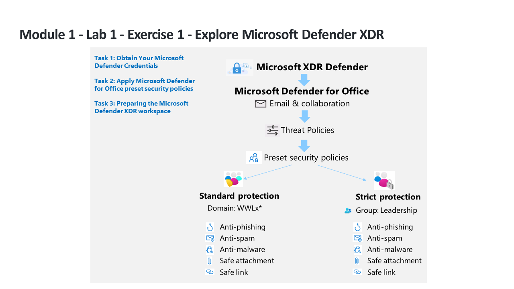

Explored the Microsoft Defender XDR portal and configured preset email security policies. Applied Standard and Strict protection profiles to the tenant domain and a leadership group, then prepared the Defender XDR workspace for the remaining labs.

Lab architecture diagram — Source: MicrosoftLearning/SC-200T00A-Microsoft-Security-Operations-Analyst, MIT License
Tasks Completed
Obtained Microsoft Defender XDR trial credentials and accessed the Defender portal
Applied the Standard protection preset security policy to the tenant domain (anti-phishing, anti-spam, anti-malware, Safe Attachments, Safe Links)
Applied the Strict protection preset security policy scoped to a Leadership group
Explored the Microsoft Defender XDR portal layout: incidents, alerts, advanced hunting, and the action center
Prepared the Defender XDR workspace for subsequent lab exercises